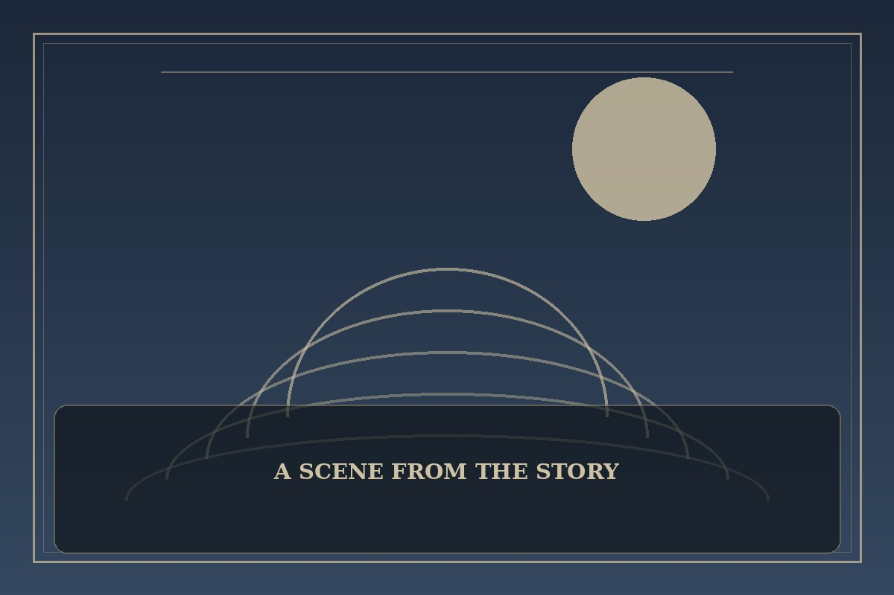

Solo Leveling
Synopsis
A low-ranked hunter is forced to confront a challenge that should be impossible. Through discipline, risk, and hard choices, he begins a journey that tests the meaning of strength.
Chapter 1: One Step Beyond the Gate
The gate was supposed to be a routine sweep, the kind experienced teams finished before lunch. But when the stone doors slammed shut, the team’s confident jokes turned into hurried breathing and the sound of weapons being drawn.
Minho had always been the weakest person in the room. He knew it from the way others counted supplies without asking him, and from the way they stood in front of him when danger appeared. This time, however, the exit was blocked and everyone was waiting for someone to act.
He studied the chamber instead of the monster: broken pillars, a cracked ceiling, and a narrow path beneath the fallen stone. Strength would not save them, but attention might. Minho raised his hand and called out a plan, surprised by how steady his voice sounded.

This fan-made sample is an original piece created for a student website project; it is not an official chapter of Solo Leveling.